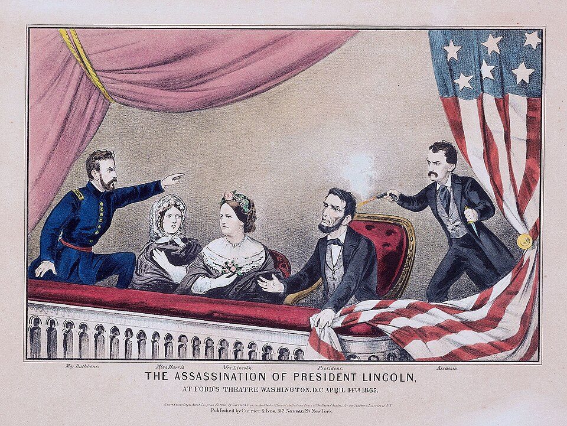

Ha muerto Abraham Lincoln, asesinado por un actor en el teatro Ford
El presidente expiró esta mañana en una casa de huéspedes, frente al teatro donde anoche le dispararon por la espalda mientras asistía a una comedia. La guerra civil había terminado hace cinco días; la bala llegó después de la paz.

A las siete y veintidós de esta mañana, en el cuarto del fondo de una modesta casa de huéspedes de la calle Décima, murió Abraham Lincoln, decimosexto presidente de los Estados Unidos, sin haber recobrado el conocimiento. Anoche, hacia las diez, mientras asistía con su esposa a la comedia «Nuestro primo americano» en el teatro Ford, un hombre entró al palco presidencial y le disparó un pistoletazo en la nuca; saltó luego al escenario gritando «Sic semper tyrannis» —así siempre a los tiranos, el lema de Virginia— y escapó a caballo por el callejón. Era John Wilkes Booth, actor conocido de este mismo teatro, partidario exaltado de la causa vencida del Sur.
El crimen llega a cinco días de la rendición del general Lee en Appomattox, que puso fin a cuatro años de guerra civil y a seiscientos mil muertos. No fue obra de un loco solitario sino de una conspiración: a la misma hora, otro conjurado entró en la casa del secretario de Estado, el señor Seward, que convalecía de un accidente, y lo acuchilló en su propio lecho; se le cree malherido pero vivo. Todo indica un plan para descabezar al gobierno en la hora misma de su triunfo. El vicepresidente Andrew Johnson, a quien también se buscaba, ha jurado ya el cargo, y tropas y policías baten los caminos de Maryland tras el asesino.
Lincoln era un hombre salido del fondo del país: leñador y peón de balsas en la frontera, abogado formado con libros prestados, dueño de una lengua llana que supo elevarse hasta la inspiración. Le tocó la presidencia cuando media nación prefirió separarse antes que verlo gobernar, y condujo la guerra sin perder de vista su sentido: proclamó la libertad de los esclavos en 1863 y sostuvo, sobre un cementerio de esa misma guerra, que el gobierno del pueblo, por el pueblo y para el pueblo no debe desaparecer de la tierra: la vieja promesa de Filadelfia, de la que este diario dio cuenta hace ochenta y nueve años, defendida ahora con sangre.
Los cirujanos supieron desde el primer examen que la herida era mortal. Lo cargaron a través de la calle hasta la pensión del sastre Petersen y lo tendieron en diagonal sobre una cama demasiado corta para su estatura; allí velaron toda la noche, bajo la lluvia que golpeaba los vidrios, su esposa deshecha, sus ministros, los médicos y su hijo mayor. Un joven cirujano del ejército, el doctor Leale, primero en llegar al palco, le sostuvo la mano hasta el final, para que supiera, dijo, que tenía un amigo. Al expirar, el secretario de Guerra, el señor Stanton, habría pronunciado el epitafio de la jornada: «Now he belongs to the ages», ahora pertenece a los siglos.
Nunca, en los ochenta y nueve años de esta república, había muerto un presidente por mano de asesino. Las campanas doblan en todas las ciudades del Norte, los edificios se cubren de negro, y hasta en el Sur vencido más de un jefe comprende que ha perdido, con su mejor enemigo, la esperanza de una paz generosa: hace pocas semanas Lincoln pedía, en su segunda jura, actuar «sin malicia hacia nadie, con caridad para todos». Esa obra queda ahora en otras manos. Quede para los años venideros medir cuánto costará a vencedores y vencidos este pistoletazo de teatro: hay balas que matan a un hombre y hieren a un país entero.